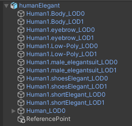
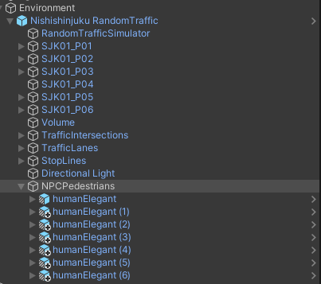
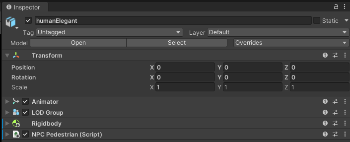
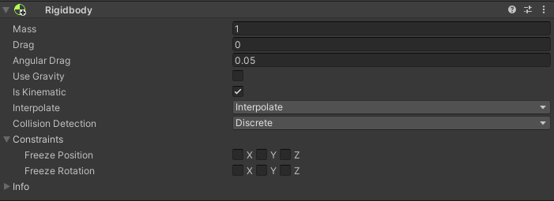
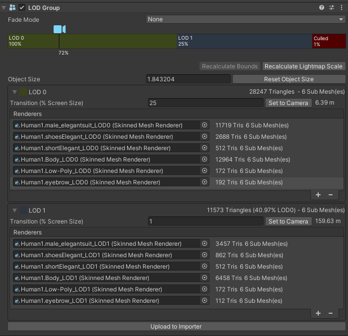
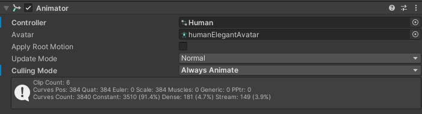
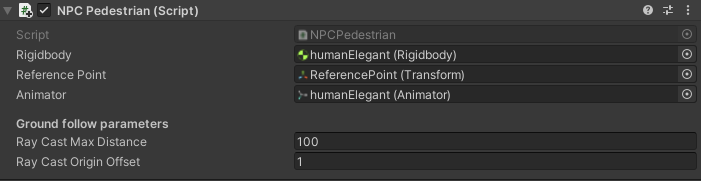
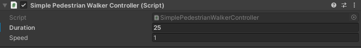
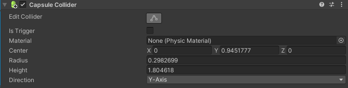
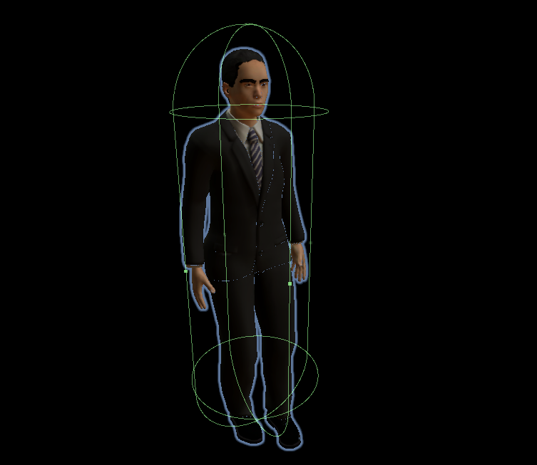

Pedestrian
Introduction
NPCPedestrian is an object that simulates a human standing or moving on the scene.
It can move cyclically in any chosen place thanks to the available scripts.
Traffic light tracking will be implemented in the future.
Sample scene
If you would like to see how NPCPedestrian works or run some tests, we encourage you to familiarize yourself with the NPCPedestrianSample default scene described in this section.
Prefab and Fbx
Prefab can be found under the following path:
Assets/AWSIM/Prefabs/NPCs/Pedestrians/humanElegant.prefab
Visual elements
Prefab is developed using models available in the form of *.fbx file.
From this file, the visual elements of the model, Animator and LOD were loaded.
The Animator and LOD are added as components of the main-parent GameObject in prefab, while the visual elements of the model are added as its children.
*.fbx file can be found under the following path:
Assets/AWSIM/Models/NPCs/Pedestrians/Human/humanElegant.fbx
NPCPedestrian prefab has the following content:

The ReferencePoint is used by the NPC Pedestrian (script) described here.
Link in the default Scene

Pedestrians implemented in the scene are usually added in one aggregating object - in this case it is NPCPedestrians.
This object is added to the Environment prefab.
Components

There are several components responsible for the full functionality of NPCPedestrian:
- Animator - provides motion animations in the scene, which are composed of clips controlled by the controller.
- LOD Group - provides level of detail configuration for shaders - affects GPU usage.
- Rigidbody - ensures that the object is controlled by the physics engine in Unity - e.g. pulled downward by gravity.
- NPC Pedestrian (script) - ensures that the movement of the object is combined with animation.
- Simple Pedestrian Walker Controller (script) - provides pedestrian movement in a specific direction and distance in a cyclical manner.
Scripts can be found under the following path:
Assets/AWSIM/Scripts/NPCs/Pedestrians/*
Rigidbody

Rigidbody ensures that the object is controlled by the physics engine.
In order to connect the animation to the object, the Is Kinematic option must be enabled.
By setting Is Kinematic, each NPCPedestrian object will have no physical interaction with other objects - it will not react to a vehicle that hits it.
The Use Gravity should be turned off - the correct position of the pedestrian in relation to the ground is ensured by the NPC Pedestrian (script).
In addition, Interpolate should be turned on to ensure the physics engine's effects are smoothed out.
LOD (Level of Detail)

LOD provides dependence of the level of detail of the object depending on the ratio of the GameObject’s screen space height to the total screen height.
The pedestrian model has two object groups: suffixed LOD0 and LOD1.
LOD0 objects are much more detailed than LOD1 - they have many more vertices in the Meshes.
Displaying complex meshes requires more performance, so if the GameObject is a small part of the screen, less complex LOD1 objects are used.
In the case of the NPCPedestrian prefab, if its object is less than 25% of the height of the screen then objects with the LOD1 suffix are used.
For values less than 1% the object is culled.
Animator

Animator component provides animation assignments to a GameObject in the scene.
It uses a developed Controller which defines which animation clips to use and controls when and how to blend and transition between them.
The AnimationController for humans should have the two float parameters for proper transitions.
Transitions between animation clips are made depending on the values of these parameters:
moveSpeed- pedestrian movement speed in \(\frac{m}{s}\),rotateSpeed- pedestrian rotation speed in \(\frac{rad}{s}\).
Developed controller can be found in the following path:
Assets/AWSIM/Models/NPCs/Pedestrians/Human/Human.controller

Walking to running transition
The example shows the state of walking and then transitions to running as a result of exceeding the condition \(\mathrm{moveSpeed} > 1.6\)
NPC Pedestrian (script)

The script takes the Rigidbody and Animator components and combines them in such a way that the actual animation depends on the movement of Rigidbody.
It provides an inputs that allows the pedestrian to move - change his position and orientation.
In addition, the ReferencePoint point is used to ensure that the pedestrian follows the ground plane correctly.
Elements configurable from the editor level
Ray Cast Max Distance- ray-cast max distance for locating the ground.Ray Cast Origin Offset- upward offset of the ray-cast origin from the GameObject local origin for locating the ground.
Input Data
| Category | Type | Description |
|---|---|---|
| SetPosition | Vector3 | Move the NPCPedestrian so that the reference point is at the specified coordinates. |
| SetRotation | Vector3 | Rotate the NPCPedestrian so that the orientation of the reference point becomes the specified one. |
Simple Pedestrian Walker Controller (script)

Simple Pedestrian Walker Controller is a script that allows the pedestrian to cyclically move back and forth along a straight line.
One-way motion is performed with a fixed time as parameter Duration and a constant linear velocity as parameter Speed.
The script obviously uses the NPCPedestrian controls provided by the NPC Pedestrian (script) inputs.
Pedestrian walking on the sidewalk
Collider

Collider is an optional pedestrian component.
By default, NPCPedestrian doesn't have this component added, It can be added if you want to detect a collision, e.g. with an EgoVehicle.
There are several types of colliders, choose the right one and configure it for your own requirements.
Capsule Collider
An example of a CapsuleCollider that covers almost the entire pedestrian.
